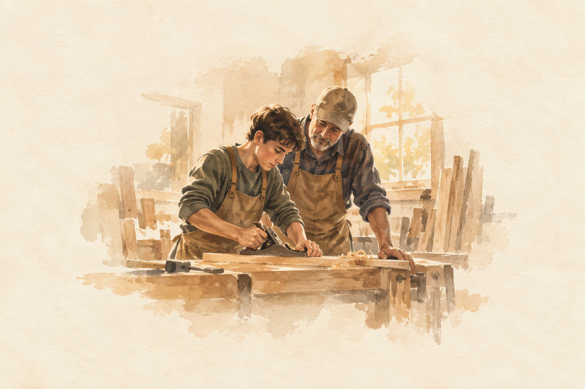
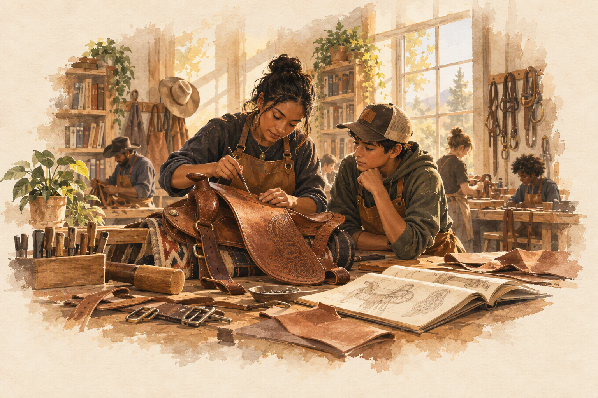

Wood & furniture
Woodworking
Furniture making, carving, joinery, cabinetmaking, and other forms of woodcraft.
Learn with your hands
Explore woodworking, leatherwork, saddle making, stained glass, and other practical paths for learning by doing.
Find a skillA lifetime of learning
Skills grow through practice, guidance, and time spent making. Discover a craft, meet a teacher, and take the next step.


Apprenticeships and mentorship
Explore possibilities for guided practice and find an experienced craftsperson willing to share knowledge.
Wood & furniture
Furniture making, carving, joinery, cabinetmaking, and other forms of woodcraft.
Leather goods
Tooling, hand stitching, bag and belt making, and leather repair.
Equestrian craft
Traditional equestrian leatherwork, patternmaking, stitching, and fit.
Stained glass
Design, cutting, leading, soldering, assembly, and finishing.
Let’s learn what you need